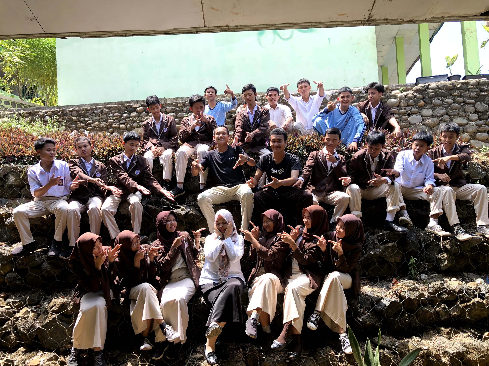
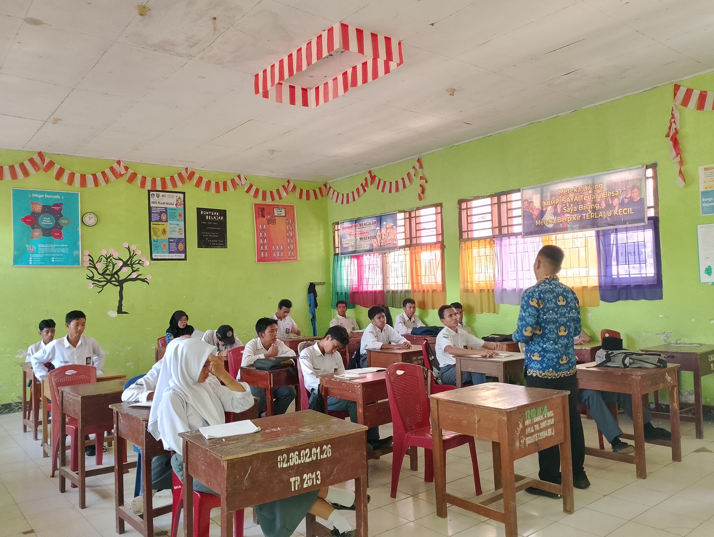
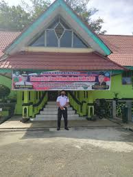

Selamat datang di Profil Sekolah
Ini adalah halaman profil sekolah kami, tempat di mana Anda dapat mengetahui lebih lanjut tentang fasilitas, visi, dan misi sekolah.
Tentang Sekolah
SMK NEGERI 4 KOTA BENGKULU adalah sekolah yang berfokus pada pendidikan berkualitas tinggi dan pengembangan karakter. Kami berkomitmen untuk membangun masa depan yang lebih baik bagi generasi mendatang.
Identitas Status Sekolah
No Hp: 083176640788
Nama: SMK NEGERI 4 KOTA BENGKULU
Alamat: JL. ENGGANO
Kecamatan/Kota: KEC. SUNGAI SERUT
Kab.-Kota/Negara: KOTA BENGKULU
Propinsi/Luar Negeri: PROV. BENGKULU
Status Sekolah: NEGERI
Bentuk Pendidikan: SMK
Jenjang Pendidikan: DIKMEN
Gallery


